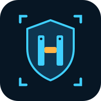
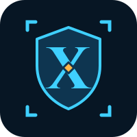
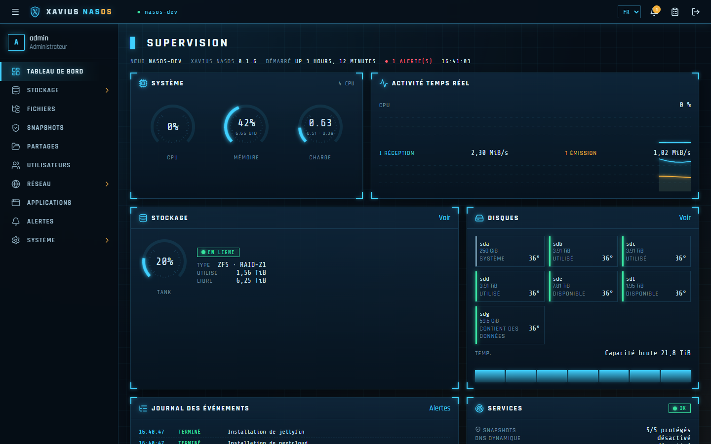
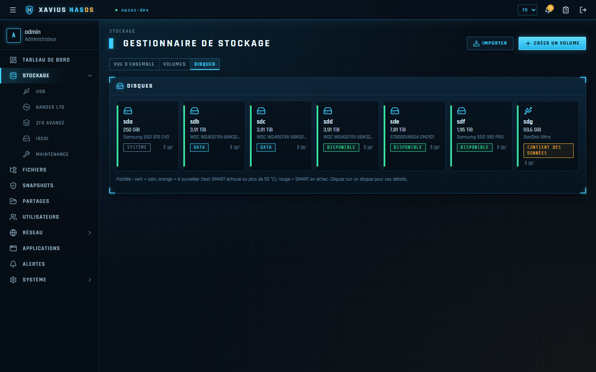
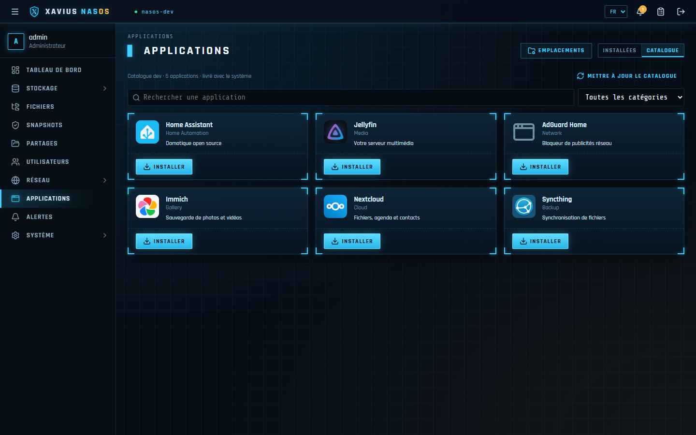
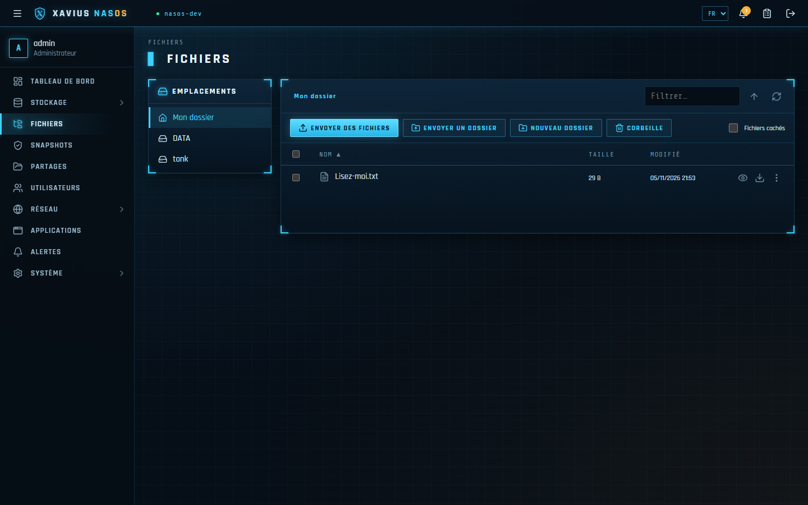

Your computers and servers still have a lot to give. Hiersoft gives them a second life with innovative software: less waste, lower costs, and machines that become useful again.

A ten-year-old computer is almost never too old: its software is. With the right system and the right tools, it becomes fast, secure and useful again.
End of support for an operating system, ever heavier software, refused upgrades: hardware in perfect condition is thrown away while its components still work.
Instead of replacing, we fit the software to the hardware: lightweight, maintained systems, new functions (storage, backup, server, media) and tools built to get the best out of every machine.
Most of a computer's environmental footprint comes from its manufacturing. Extending its life is the most effective — and the cheapest — choice, for your budget as well as for the planet.
From diagnosis to recommissioning, a single point of contact to reuse, modernize and extend the life of your IT equipment.
Inventory and audit of your machines: what can be reused, what deserves a small upgrade (SSD, memory), and what each device can be used for tomorrow.
An old PC becomes a NAS, a backup server, a home automation or media server, a lightweight Linux workstation or a dedicated kiosk — installed, configured and ready to use.
Custom tools designed for existing hardware: web applications, automation, integrations, and artificial intelligence running locally, without the cloud.
Updates, disk and backup monitoring, remote or on-site assistance: so that repurposed hardware lasts as long as possible.
Someone who answers when something goes wrong: user assistance, remote or on-site troubleshooting, and follow-up of every request until it is resolved.
Up-to-date inventory of workstations, servers and licenses, deployment and updates, monitored backups and security: your IT equipment stays known, under control and durable.
Gradual move to free software (Linux, LibreOffice, Nextcloud…): review of the existing setup, data migration, user training, with no business interruption and no vendor lock-in.

Our approach in action: Xavius NasOS turns an existing PC or server into a complete NAS, easy to use and dependable every day. Your data stays with you, with no subscription and no forced cloud.




RAID, compression, encryption, datasets, import of existing volumes.
Daily snapshots, Windows "Previous versions", recycle bin for shares.
Windows, macOS (Time Machine), Linux and secure share links.
Jellyfin, Nextcloud, Immich, Home Assistant… installed and configured in one click.
QR code for your phone, dynamic DNS, automatic HTTPS certificate.
Video and music playback in the browser, photos sorted by date, duplicate finder.
| Minimum | Recommended | |
|---|---|---|
| Processor | x86-64, 2 cores | 4 cores or more |
| Memory (Btrfs) | 4 GB | 8 GB |
| Memory (ZFS) | 4 GB | 8 GB, 16 GB with many apps |
| System disk | 32 GB (SSD recommended) | 64 GB; 128 GB to install apps on it |
| Boot | BIOS or UEFI, Secure Boot disabled | |
Reuse before replacing: every machine put back into service is one less device to manufacture.
Open software and solutions hosted at your place: your data and your hardware belong to you.
Debian, ZFS, Btrfs, WireGuard: modern, proven foundations that run very well on older hardware.
An old PC sleeping in a cupboard, equipment to renew, a Xavius NasOS demo or a tool to build? Write to us.
hiersoft@salade.io →